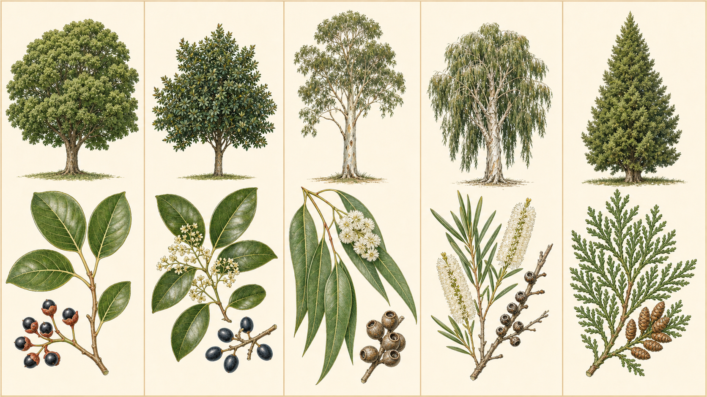
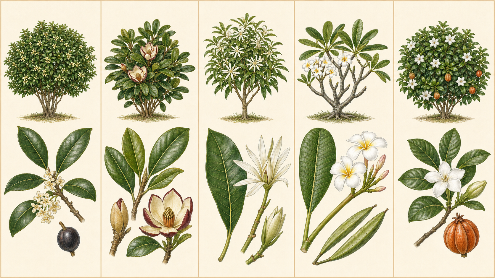
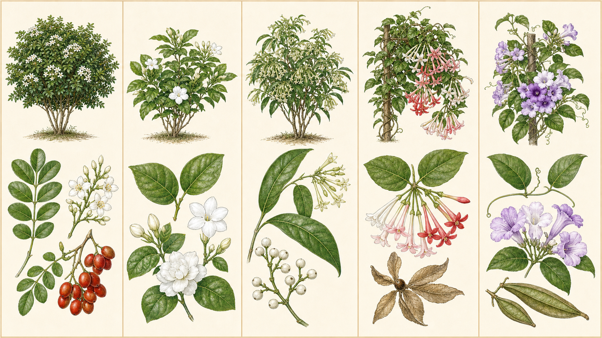
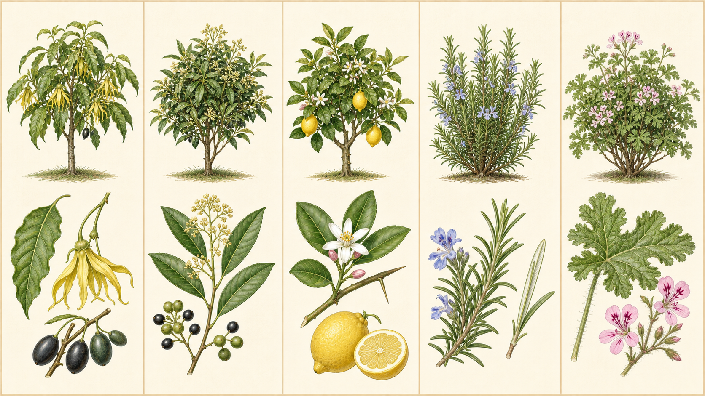
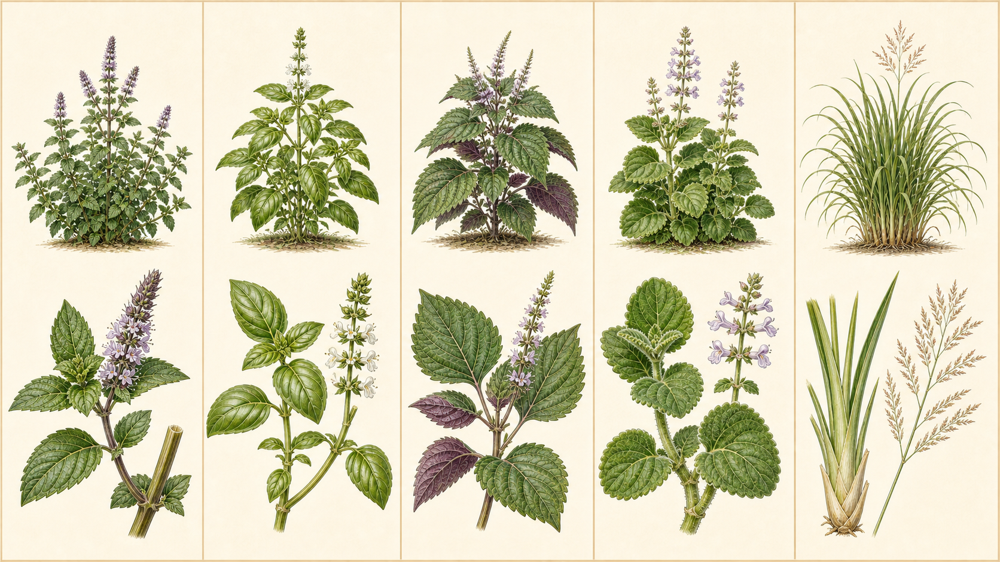
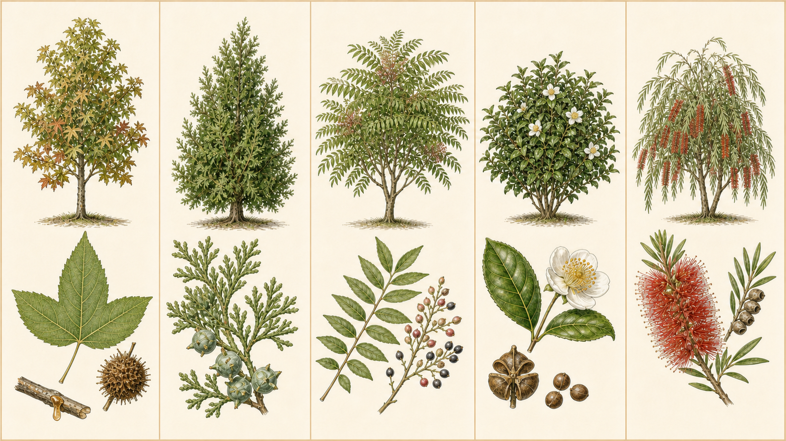

花香
花朵常利用香氣吸引傳粉者；同一種花在早晚、溫度或開花階段不同時，濃淡也會改變。
30 FRAGRANT PLANTS
香氣不只來自花。葉、果皮、樹脂和木材也可能含有容易揮發的芳香物質。本頁收錄 25 種木本或木質化植物與 5 種草本，從「香從哪裡來」開始辨識。
花朵常利用香氣吸引傳粉者；同一種花在早晚、溫度或開花階段不同時，濃淡也會改變。
許多香氣藏在葉片的腺點或腺毛中。完整葉有時氣味較淡，校園觀察不必為了聞香而揉搓活葉。
可用清新、甜、辛、樹脂、柑橘、草本等詞描述；感受沒有唯一答案，重點是說出比較證據。

香：落葉揉動時常有清涼的樟腦氣味。
看：革質葉常有三出脈，黑色小果下方有杯狀托。
常綠喬木・葉香香：葉片有肉桂般的甜辛香，是臺灣特有植物。
看：橢圓革質葉有明顯三出脈，小花淡色、核果成熟轉深。
常綠喬木・葉香香：自然落葉帶有鮮明的檸檬氣味。
看：高大樹幹光滑而斑駁，成熟葉狹長下垂，果實為木質蒴果。
常綠喬木・葉香香：狹長葉有清涼、近似樹脂的氣味。
看：白色樹皮層層剝落如紙，乳白花序像瓶刷，枝上留有小蒴果。
喬木・不剝樹皮香：枝葉與木材有溫暖的樹脂香；校園只聞自然落葉。
看：枝葉扁平、鱗片葉交疊，毬果狹長；是臺灣原生針葉樹。
原生喬木・不刮樹皮
香：細小花朵會散出甜香，秋季常較明顯。
看：葉對生、革質；乳白至橙黃小花成簇長在葉腋。
常綠灌木・花香香：乳白花常帶近似香蕉或熟果的甜香。
看：常綠灌木，葉厚而有光澤；花瓣邊緣常染紫紅色。
常綠灌木・花香香：象牙白花有濃郁、清甜的香氣。
看：小喬木，葉長橢圓；花由多枚狹長花被片組成，常開在枝端或葉腋。
常綠喬木・花香香：白黃或粉色花常有柔和甜香。
看：粗枝多肉感，葉聚枝端；果實常成對細長，折傷會流白色乳汁。
小喬木・不碰乳汁香：蠟質白花香氣濃，老花逐漸轉乳黃。
看：葉對生或輪生、深綠有光澤；果實成熟呈黃橙色。
常綠灌木・不可食
香：白花小而芳香，開花時在綠籬旁就可能聞到。
看：奇數羽狀複葉有 3–9 枚光亮小葉，果實成熟變紅。
常綠灌木・花香香：白花散出甜美濃香，通常春末至秋季開花。
看：木質灌木或略具蔓性，葉對生；可見單瓣、重瓣等園藝型。
木質灌木・花香香：細管狀花在夜間散出很強的香氣，近距離久聞可能不舒服。
看：枝條拱垂，葉互生；花淡黃綠，果實成熟乳白。
有毒灌木・只看不採香：下垂花序帶甜香，花色常由白轉粉紅再轉紅。
看：木質藤本、葉對生；果實有 5 條明顯縱稜或翅。
木質藤本・不可食香：葉片受碰動會有蒜味；觀察時不必揉碎活葉。
看：木質藤本，葉多由兩枚小葉組成並有卷鬚；花呈紫色漏斗狀。
木質藤本・葉香
香：成熟花由綠轉黃，會散出濃郁甜香。
看：枝條下垂，葉緣波浪狀；每朵花有 6 枚細長扭曲花瓣。
常綠喬木・花香香：葉與圓果具有辛香和柑橘調氣味。
看：臺灣原生小喬木，葉狹長；淡色小花成簇，果實由綠轉黑。
落葉小喬木・葉果香香：花、葉與黃色果皮都有鮮明柑橘香。
看：葉互生、油腺點細密；白花外側可帶紫色，枝條可能有刺。
常綠小喬木・留意刺香：狹葉有濃厚、近似松脂的草本香。
看：基部木質化，葉對生、邊緣反捲、背面淡白，花淡藍紫。
常綠亞灌木・葉香香：葉片腺毛可散出玫瑰、柑橘般香氣。
看：基部木質化，葉深裂且柔毛明顯；粉紅小花上瓣有深色紋。
芳香亞灌木・葉香
香：葉片有清涼的薄荷氣味。
看：方形莖、葉對生且有鋸齒，淡紫小花排列成穗。
多年生草本・葉香香：葉有甜辛香；品種不同，氣味與葉色也會變化。
看：方形莖、葉對生，白色小花輪生在直立花軸上。
一年生草本・葉香香：葉片有濃烈、辛涼而帶果香的特殊氣味。
看：方形莖，對生葉寬卵形、有粗鋸齒，葉面可綠、紫或雙色。
一年生草本・葉香香：厚葉受輕碰時會散出近似奧勒岡或百里香的強香。
看：肉質莖葉，葉對生、圓而有波齒，表面密生柔毛。
多年生草本・葉香香：葉鞘和葉片有明顯檸檬、柑橘般香氣。
看：狹長葉從基部密生成大叢，抽出分枝花序；葉緣可能割手。
多年生草本・留意葉緣
香：樹名來自具香氣的樹脂；校園不傷樹，只觀察自然落枝旁的氣味。
看：單葉多為三裂，葉緣有鋸齒；果實是刺球狀聚合果，秋冬常轉黃紅。
落葉喬木・不傷樹香：鱗葉和小枝帶清新的樹脂香，可聞自然落枝。
看：樹冠端正，枝葉成扁平扇狀；毬果近球形，鱗片有小鉤狀突起。
常綠喬木・葉香香：葉與樹脂有辛香調；只用自然落葉進行比較。
看：奇數羽狀複葉由許多狹長小葉組成，果實成串並由紅轉藍黑。
落葉喬木・葉樹脂香香：白花有淡雅香氣；熟悉的茶香多在葉片經加工後才更明顯。
看：常綠灌木，葉橢圓而有細鋸齒；白花中央有許多黃雄蕊，果實會裂成三瓣。
常綠灌木・淡花香香：狹長葉具有清涼的樹脂香，名稱不代表可食用。
看：枝條下垂，紅花由大量細長雄蕊排成瓶刷狀；舊名常作 Callistemon viminalis。
小喬木・葉香SOURCE-BACKED NOTES
名稱與學名以臺灣及國際植物資料庫交叉核對；芳香特徵與安全提醒參考農業、植物園及大學推廣資料。外部圖片只供查核，本頁 6 張圖版均由 IMAGE 2.0 重新繪製。